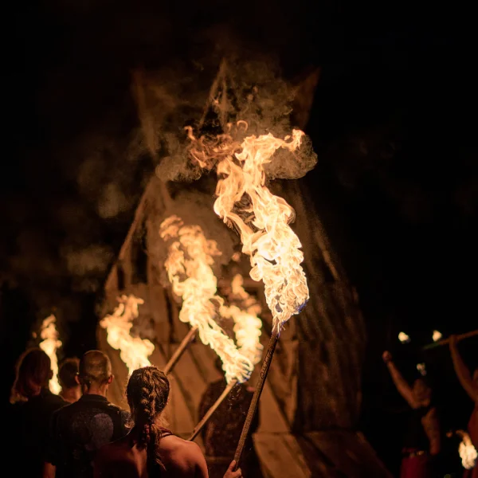
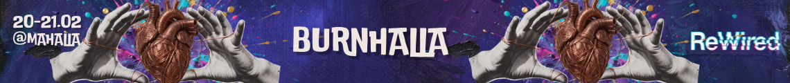

Formerly known as 'Burn Night', this is our answer to a 'Decompression' for Kiez Burn as well as other Burns and Burning Man itself.
It is a co-created one day and night event run entirely by volunteers. Everyone buys a ticket, including the organisers. BurnHalla builds on Kiez Burn's 11 principles - which should be familiar to you before you join.
Beyond the Burns we are a community of creatives, artists, musicians, and experience creators who come together throughout the year to create parties, art and events.
Let's continue to make and create together with BurnHalla as another avenue for creation and connection.
By attending BurnHalla you agree to abide by our Code of Conduct which you can find here.
A group of Burners based in Berlin or wider Germany. A lot of us have experience in organising past Burn Nights or Kiez Burn.
We would love to be joined by other German burners from further afield as well as international folks!
Some of the organising team had a vision to move away from the 'club night' feel of previous Burn Nights & wanted a space for a more authentic Burner event with more control over the space and less commercial aspects i.e. paid bar.
This is our first year at MaHalla, a steel-girded industrial powerhouse of a venue (literally ex power plant). With room to play & grow we hope you love the opportunities it brings us.
No one within our community. Everyone buys a ticket and everyone is expected to volunteer in some capacity.
We are grateful to be legally backed by the Kiez Burn e.v. verein for the contractual, insurance, and financial risky parts of the event.
We don't intend to make a profit and any magically unspent budget will go towards Kiez Burn 2026.
We are officially sold out! So if you cannot make it, another burner might gladly take your ticket off your hands.
You can join our BurnHalla orga group on telegram where we have opened a dedicated channel called “Tickets: SELL / REQUEST / SWAP”. You can initiate your own transfer through the ticket link you received until 24h hours before the event.
We have bought out the venue so we will not have a paid bar on site. Instead we will have burner bars that run entirely on donations.
You can donate to the general bar pool here proceeds from this pool will be distributed between all bars. Alternatively you can donate directly to one of the theme bars
We have long gifted our delicious menu of luxury cocktails in exchange for fun quests. However at this event we don't yet have the gold we need to buy our spirits.
With your donation we will fill your hands with a delightful potion as well as quests to enchant your evening with whimsy. Any extra dubloons will go towards having a medieval tent to share next Kiez Burn.
In the depths of the basement, where the currents of all dancefloors meet, the Monkey Bar welcomes you – from 16:00 till late, with homemade banana limoncello, cremant, popcorn and shenanigans!
Donate here or bring dry Sekt, rum or vodka on site.
Also, we are easily bribed by terrible sea shanties and banana-monkey-shaped plunder. All hands on deck!
Once again - Nothing is for sale on site! We only have what we bring!
We welcome both food dreams as well as contibutions to the potluck.
Both links for sign ups can be found here.
Hell yes friend! The motto of the game is participate don't spectate. If you don't have capacity for a lead role or to bring art/music/dreams, then do sign up for a shift to help out on one of our teams for the Build, Strike or main Event tasks which keep things smooth and running.
Sign up here (once you have bought your ticket) - some shifts will be released at a later date as teams confirm their needs.
ADMISSION OF PARTICIPANTS YOUNGER THAN 18 YEARS
Under 18s:
Are welcome at the event between 12:00-22:00. After this please ensure your child gets home safely.
Children under 13:
Are welcome at the event only under adult supervision. If a child is repeatedly found to be roaming without parental supervision the parent/guardian/responsible adult will be handled as a problematic participant and may be asked to leave the event early.
All Underage Participants Under 18yrs:
2 Adults must be listed as responsible adults for each child that comes on site with names and contact numbers.
In the event of a lost child both adults will be called by the Site Lead or Rangers and if not contacted the minor will wait with First Aid or Welfare volunteers.
MaHalla’s main hall is largely low-barrier, but BurnHalla has some accessibility limitations. Parking nearby is limited. The upper floor and basement are only accessible via narrow staircases. The promenade (safer space, rangers, workshop area) is six steps above ground level; a ramp may be available.
Navigation is mostly visual, but site guides will be present to help with orientation. There is one accessible restroom with support bars.
BurnHalla includes loud music, flashing lights, and crowded areas, as well as calmer, cozier spaces. Welfare provides a safer space with reduced sensory input and a limited supply of earplugs—please bring your own if you can.
Food at the potluck and food dreams may not always include full dietary information.
If you encounter barriers or need assistance, contact Welfare Care Bears or Rangers. For specific accessibility questions, reach out to @lemonmicha on Telegram.
